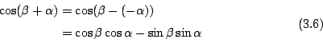

．作者任教於香港科技大學數學系
三、圓與三角學
項武義
|
|
．作者任教於香港科技大學數學系 | ||
|
三、圓與三角學
項武義 |
|
在各種各樣的平面形之中，圓是最為完美對稱者， 而三角形則是最為簡單者。所以在平面幾何的研討中，圓和三角形理所當然地是其精要之所在。例如定量平面幾何中的基本定理，首推三角形的面積公式、相似三角形定理和勾股定理，即
本章將以上述三者為基礎，研討圓與三角形的解析幾何，其所得之基礎理論也就是三角函數的基本性質和三角定律。正弦、餘弦函數是一對起源于圓周運動，密切配合的週期函數，它們是解析幾何學和週期函數的分析學中最為基本和重要的函數；而正弦、餘弦函數的基本性質乃是圓的幾何性質（主要是其對稱性）的直接反映。 三角學 (Trigonometry) 所討論的課題是三角形的各種各樣幾何量之間的函數關聯。由此可見，三角學其實就是三角形的解析幾何，可以說是具體而微的解析幾何；它是整個平面解析幾何的基礎所在，也是用解析法系統研究幾何的基本公具。
如 [圖 3-1] 所示，設 P(x,y) 是在單位圓上，以 (1,0) 為起點作逆時鐘方向的單位速率運動的動點，則它的 x, y 坐標乃是時間 t
的函數，分別定義為餘弦函數 和正弦函數 。
[ 圖 3-1 ]
其實， 和 乃是單位圓的自然的動態（解析）描述。由此可以想到，正弦、餘弦函數的基本性質乃是圓的幾何性質（主要是對稱性）的解析表述。例如 1. （勾股定理）
2. 圓周周長
週期性：
3. 對于 x-軸（或 y-軸）的反射對稱性（參看 [圖 3-2]）
4. 對于直線 x=y 的反射對稱性（參看 [圖 3-2]）：
[ 圖 3-2 ]
5. 圓的旋轉對稱性
複角公式：
[ 圖 3-3 ]
如 [圖 3-3] 所示，
乃是
旋轉 α 角之所得，所以當然有
，即有
亦即 把 (3.4)-式和 (3.2)-式結合，即得

再把 (3.6)-式和 (3.3)-式相結合，即得 
我們還可以把 (3.6)-式和 (3.7)-式用複數的乘法組合成下述更加整齊的複值形式，即 再者，我們可以把 z=x+iy 想為平面上 P(x,y) 點的複數坐標 (complex coordinate) 。如 [圖 3-4] 所示，P 點的極坐標
[ 圖 3-4 ]
將 (3.8)-式用來表達複數的乘法，即有
亦即兩個複數 z1, z2 相乘，其絕對值相乘而其幅角則相加。此事在研討複數時具有基本的重要性。
6. 和化積公式和反射對稱性
[ 圖 3-5 ]
如 [圖 3-5] 所示，等腰三角形
|
對外搜尋關鍵字： ．圓 ．三角形 ．三角學 ．複數 ．Archimedes ．秦九韶 ．Heron ．二項定理 |
|
|
|
|
（若有指正、疑問……，可以在此 留言 或 寫信 給我們。） |
|
|
|
EpisteMath (c) 2000 中央研究院數學所、台大數學系 各網頁文章內容之著作權為原著作人所有 |
| 最後修改日期：6/19/2004 |